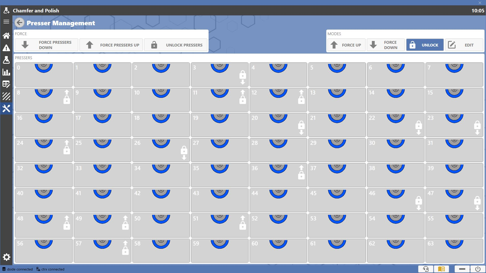
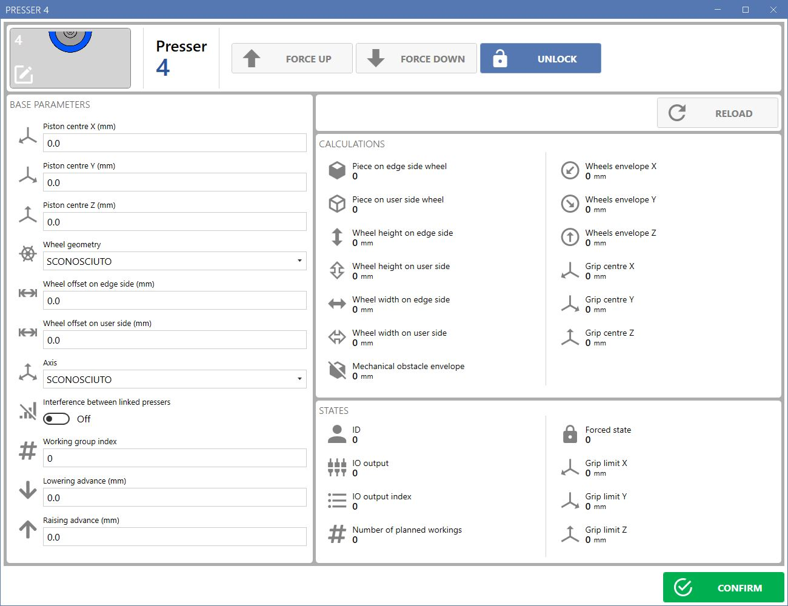
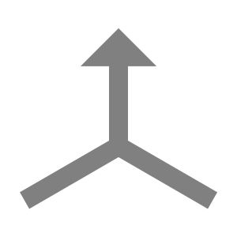
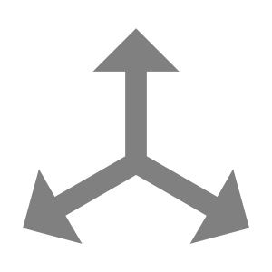
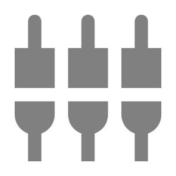

From the Tools page, choose Presser Control to view the machine pressers and access their controls and parameters.
NOTE
This page is accessible at the software technician level. The number of pressers displayed depends on the machine configuration, up to 64.

Page controls
The Force section acts on all displayed pressers.
Force pressers down Forces all displayed pressers down.
Force pressers up Forces all displayed pressers up.
Unlock pressers Removes manual forcing from all displayed pressers.
The Modes section selects what happens when the user clicks a single presser. Selecting a mode alone does not move or unlock a presser.
Force Up Selects the mode in which clicking a presser forces that presser up.
Force Down Selects the mode in which clicking a presser forces that presser down.
Unlock Selects the mode in which clicking a presser removes that presser’s manual forcing.
Edit Selects the mode in which clicking a presser opens its detail window.
NOTE
Unlock removes manual forcing; it does not mean “force up”. The following presser position is determined by the machine logic.
Presser grid and indicators
Each tile identifies one presser and shows its reported state. A green background indicates Up, orange indicates Down, and grey indicates Disabled. The reported state and a requested forcing state are separate: after issuing a command, check the returned state.
Manual forcing indicator A padlock means manual forcing is active. Its absence means the presser is unlocked.
Forced Up indicator An upward arrow next to the padlock identifies a requested forced-up state.
Forced Down indicator A downward arrow next to the padlock identifies a requested forced-down state.
Edit indicator Visible while Edit mode is selected. Clicking the tile opens the parameters for that presser.
Presser Parameters Window
From this window the user can see and modify the presser parameters.

Commands
Force Up Directly forces the selected presser up.
Force Down Directly forces the selected presser down.
Unlock Removes manual forcing from the selected presser.
Reload Reads the Calculations and States sections again. It does not reload the editable Base parameters.
Base parameters
Piston centre X X coordinate of the presser piston centre.
Piston centre Y Y coordinate of the presser piston centre.

Piston centre Z Z coordinate of the presser piston centre.
Wheel geometry Selects the wheel geometry configured for this presser.
Wheel offset on edge side Offset of the wheel on the edge side.
Wheel offset on user side Offset of the wheel on the user side.

Axis Selects the presser axis configuration
Interference between linked pressers On/off configuration flag for interference between linked pressers.
Working group index Index of the working group associated with the presser.
Lowering advance Advance distance used for presser lowering.
Raising advance Advance distance used for presser raising.
Calculations
Piece on edge side wheel Piece reference reported by the PLC for the wheel on the edge side.
Piece on user side wheel Piece reference reported by the PLC for the wheel on the user side.
Wheel height on edge side Calculated height of the wheel on the edge side.
Wheel height on user side Calculated height of the wheel on the user side.
Wheel width on edge side Calculated width of the wheel on the edge side.
Wheel width on user side Calculated width of the wheel on the user side.
Mechanical obstacle envelope Mechanical obstacle envelope value reported by the PLC.
Wheels envelope X Calculated wheel envelope along X.
Wheels envelope Y Calculated wheel envelope along Y.
Wheels envelope Z Calculated wheel envelope along Z.
Grip centre X Calculated X coordinate of the grip centre.
Grip centre Y Calculated Y coordinate of the grip centre.
Grip centre Z Calculated Z coordinate of the grip centre.
States
ID Presser identifier reported by the PLC.

IO output IO output value associated with the presser, as reported by the PLC.
IO output index Index of the IO output associated with the presser.
Number of planned workings Number of planned workings reported for this presser.
Forced state Numeric forcing state reported by the PLC.
Grip limit X Grip limit along X reported by the PLC.
Grip limit Y Grip limit along Y reported by the PLC.
Grip limit Z Grip limit along Z reported by the PLC.